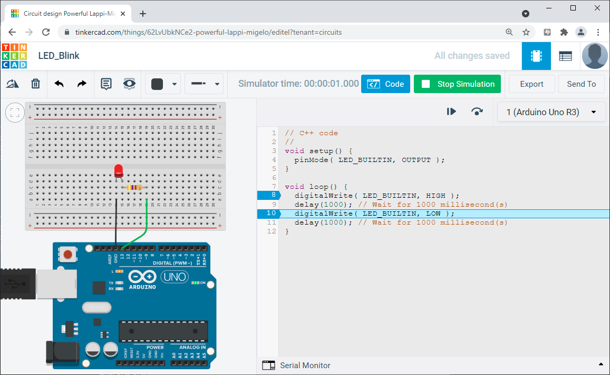

Arduino & Embedded Systems#
Keywords: Embedded Systems, Microcontroller Programming, Arduino, C/C++
ในช่วงหลายปีที่ผ่านมา ถ้าต้องการเรียนรู้ด้านระบบสมองกลฝังตัว (Embedded Systems) ซึ่งเป็นประเภทหนึ่งของระบบคอมพิวเตอร์ที่พบเห็นได้ในชีวิตประจำวัน และการเขียนโปรแกรมสำหรับไมโครคอนโทรลเลอร์ (Microcontrollers) ซึ่งเป็นองค์ประกอบหนึ่งที่สำคัญของระบบสมองกลฝังตัว ตัวเลือกแรกสำหรับผู้ที่เริ่มต้น คงจะเป็น Arduino แม้ว่าในปัจจุบัน ก็มีตัวเลือกอื่นอีกที่น่าสนใจ ยกตัวอย่างเช่น บอร์ด BBC Micro:bit และบอร์ด Raspberry Pi
- หลักการทำงานโดยทั่วไปของไมโครคอนโทรลเลอร์
- การเรียนรู้และใช้งาน Arduino
- ตัวอย่างโค้ด Arduino Sketch
- ซอฟต์แวร์ในประเภท Arduino Bootloader
- ซอฟต์แวร์ในประเภท Arduino Core / Arduino Board Manager
- การกำหนดหมายเลขขาไมโครคอนโทรลเลอร์ Arduino Pin Mapping
- ประวัติความเป็นมาโดยสังเขปเกี่ยวกับ Arduino
- ทิศทางการพัฒนาบอร์ด Arduino จากอดีตถึงปัจจุบัน
- การเปลี่ยนแปลงจากชิปตัวประมวลผล 8 บิต ไปสู่ 32 บิต
- การเข้าสู่ยุค Arduino Pro
- ความนิยมแพร่หลายของ Arduino
- ซอฟต์แวร์ในประเภท Arduino Libraries
- ตัวอย่าง Arduino Starter Kits
- ตัวเลือกที่เป็นซอฟต์แวร์สำหรับ Arduino
- ซอฟต์แวร์สำหรับจำลองการทำงานของบอร์ด Arduino
- ตัวเลือกสำหรับ Arduino & RTOS Programming
- ข้อควรระวังในการต่อวงจรร่วมกับบอร์ด Arduino
- ตัวอย่างคำถามสำหรับการทบทวน / เรียนรู้เพิ่มเติม
▷ หลักการทำงานโดยทั่วไปของไมโครคอนโทรลเลอร์#
ไมโครคอนโทรลเลอร์เป็นไอซีที่มีวงจรอิเล็กทรอนิกส์อยู่ภายใน ประกอบด้วยองค์ประกอบที่สำคัญรวมไว้ในชิปเดียวกัน อย่างเช่น
- ตัวประมวลผล หรือ ซีพียู (CPU: Central Processing Unit)
- วงจรรอบข้างสำหรับการทำงานในรูปแบบต่าง ๆ (เรียกว่า Peripheral Units)
- ส่วนที่เป็นอินพุต-เอาต์พุต (Input/Output Unit)
- และหน่วยความจำแบบ Flash สำหรับเก็บข้อมูลที่เป็นคำสั่งสำหรับซีพียู และหน่วยความจำแบบ SRAM สำหรับการเก็บข้อมูลชั่วคราวในระหว่างการทำงานของซีพียู
โดยทั่วไปแล้ว วัตถุประสงค์ของการใช้งานไมโครคอนโทรลเลอร์ก็คือ การเขียนโปรแกรมด้วยภาษาคอมพิวเตอร์ (เช่น ภาษา C/C++) เพื่อกำหนดรูปแบบการทำงานไมโครคอนโทรลเลอร์ ให้ตอบสนองต่อเหตุการณ์หรือสัญญาณทั้งภายในหรือภายนอก เช่น จากวงจรอิเล็กทรอนิกส์ ตามรูปแบบที่กำหนดไว้ ยกตัวอย่างเช่น
- ถ้ากดปุ่มหนึ่งครั้งทำให้เปลี่ยนสถานะลอจิกที่ขาเอาต์พุต และใช้ควบคุมการทำงานของวงจรอื่น เช่น วงจรไดโอดเปล่งแสง (LED) เป็นต้น
- การรับค่าจากสัญญาณแอนะล็อกเข้ามาที่ขาอินพุต เพื่อใช้ในการสร้างสัญญาณควบคุมที่ขาเอาต์พุตอีกขาหนึ่ง และนำไปใช้ปรับความเร็วการหมุนของมอเตอร์ไฟฟ้าผ่านชุดขับเคลื่อนที่เป็นวงจรอิเล็กทรอนิกส์
- การอ่านค่าจากวงจร หรือ โมดูลเซ็นเซอร์ (Sensors) ซึ่งเป็นอุปกรณ์ประเภทที่เรียกว่า "ทรานสดิวเซอร์" (Transducers) ที่ทำหน้าที่แปลงพลังงานรูปแบบต่าง ๆ ให้เป็นพลังงานไฟฟ้า และอุปกรณ์ประเภทนี้สามารถนำมาเชื่อมต่อกับไมโครคอนโทรลเลอร์ได้ด้วยสัญญาณไฟฟ้าทั้งแบบดิจิทัลหรือแอนะล็อก เช่น การวัดอุณหภูมิ ความเข้มแสง ระยะห่างจากวัตถุกีดขวาง เป็นต้น
- การกำหนดสถานะของเอาต์พุตเพื่อควบคุมการทำงานของวงจรภายนอก เช่น วงจรอิเล็กทรอนิกส์ควบคุมการหมุน ความเร็วและทิศทางของมอเตอร์ไฟฟ้า เป็นต้น หรืออาจเป็นอุปกรณ์อื่นในประเภทที่เรียกว่า "แอคชูเอเตอร์" (Actuator) ที่ทำหน้าที่แปลงพลังงานไฟฟ้าให้เป็นพลังงานกล หรือมีการเคลื่อนไหวทางกล
ไมโครคอนโทรลเลอร์จะทำงานต่อเนื่อง คอยตอบสนองต่อเหตุการณ์ต่าง ๆ (และอาจไม่เกี่ยวข้องกับผู้ใช้โดยตรง) ดังนั้นจึงมีรูปแบบการทำงานของระบบที่เรียกว่า Reactive Systems และเมื่ออยู่ในระบบอื่น (ฝังตัวอยู่ภายใน) ก็เรียกได้ว่าเป็น Reactive Embedded Systems
▷ การเรียนรู้และใช้งาน Arduino#
Arduino เป็นคำในภาษาอิตาลี (อ่านออกเสียงว่า "อาดูอิโน" หรือ "อาร์ดูยโน่") ประกอบด้วยทั้งซอฟต์แวร์และฮาร์ดแวร์ที่เราสามารถนำมาใช้ในการเรียนรู้ และนำไปประยุกต์ใช้งานได้จริงสำหรับการสร้างระบบสมองกลฝังตัว
ส่วนที่เป็นซอฟต์แวร์ของ Arduino สำหรับผู้ใช้คือ โปรแกรมประเภทที่เรียกว่า IDE (Integrated Development Environment) มีชื่อเรียกว่า Arduino IDE เป็น Desktop App ที่ง่ายต่อการใช้งาน และใช้ได้กับระบบปฏิบัติการ Windows, Linux และ Mac OS
รูปภาพ: Arduino Hardware + Software (Source: arduino.cc)
โปรแกรม Arduino IDE มีไว้สำหรับการคอมไพล์โค้ดในภาษา C/C++ ให้ไฟล์ประเภท .hex หรือ .bin หรือที่เรียกว่า "เฟิร์มแวร์" (Firmware) เพื่อนำไปใส่ลงในหน่วยความจำ Flash ภายในชิปไมโครคอนโทรลเลอร์ และโปรแกรมนี้จะไม่สูญหายจากหน่วยความจำภายใน หากปิดแรงดันไฟเลี้ยง
การใช้งาน Arduino IDE แบ่งออกเป็นสองขั้นตอนหลัก เรียกว่า Verify / Build (การแปลงโค้ด หรือ การคอมไพล์) และ Upload (การนำไฟล์ไปใส่ลงในชิปไมโครคอนโทรลเลอร์) ตามลำดับ หากทำทั้งสองขั้นตอนได้สำเร็จ ไมโครคอนโทรลเลอร์จะทำงานตามที่กำหนดไว้โดยโปรแกรม (เฟิร์มแวร์) ที่ได้มีการอัปโหลดไปใส่ไว้ในหน่วยความจำภายในครั้งล่าสุด
ในส่วนของการเขียนโค้ดด้วยซอฟต์แวร์ Arduino IDE ผู้ใช้จะต้องเขียนและบันทึกโค้ดลงในไฟล์ที่เรียกว่า Arduino Sketch (.ino) และใช้คำสั่งที่ได้มีการกำหนดไว้โดย API (Application Programming Interface) สำหรับ Arduino ซึ่งประกอบด้วยฟังก์ชันต่าง ๆ ในภาษา C/C++ (สามารถดูรายการคำสั่งได้จาก Arduino Language Reference) และผู้ใช้สามารถเรียนรู้การเขียนโค้ดโดยใช้คำสั่งเหล่านี้ได้ไม่ยาก

รูปภาพ: Arduino IDE Software: offline and online
(Source: arduino.cc)
ถ้าอ้างอิงจากเว็บไซต์ของ Arduino มีการเขียนสรุปข้อดีไว้ดังนี้
- Inexpensive — มีบอร์ดไมโครคอนโทรลเลอร์ให้เลือกใช้ ที่ราคาไม่แพง เมื่อเปรียบเทียบกับบอร์ดของผู้ผลิตอื่น
- Cross-platform — มีซอฟต์แวร์ Arduino IDE ที่ใช้ได้กับหลายระบบปฏิบัติการ
- Simple, clear programming environment — มีซอฟต์แวร์ Arduino IDE ที่ใช้งานได้ง่าย
- Open source and extensible software — เป็นซอฟต์แวร์ประเภทโอเพนซอร์ส และมีส่วนเสริม เช่น การติดตั้งไลบรารีและซอฟต์แวร์อื่น ๆ เพิ่มได้อีก
- Open source and extensible hardware — รายละเอียดในการออกแบบของบอร์ดไมโครคอนโทรลเลอร์ นั้นมีการเผยแพร่ภายใต้ Creative Commons license
ตัวอย่างบอร์ด Arduino ที่ได้รับความนิยมสำหรับผู้เริ่มต้น ได้แก่ Arduino Uno (rev.3) และ Arduino Nano (v3.x) อาจเป็นเพราะมีราคาไม่แพง มีแหล่งข้อมูลให้ศึกษาได้มากกว่าบอร์ดรุ่นอื่น ๆ ทั้งสองบอร์ดนี้ใช้ชิปไมโครคอนโทรลเลอร์เหมือนกันคือ ATmega328P (16MHz, 2KB SRAM, 32KB Flash, 1KB EEPROM) ภายในมีตัวประมวลผล หรือ ซีพียู 8 บิต แต่บอร์ด Uno มีขนาดใหญ่กว่าบอร์ด Nano
โดยทั่วไปแล้ว บอร์ด Arduino มีขา I/O ที่มีลักษณะเป็น Pin Headers จำแนกได้เป็นสองประเภท คือ ขาแบบตัวผู้ (Male Pin Headers) และขาแบบตัวเมีย (Female Pin Headers) บอร์ด Uno มีขาแบบตัวเมียและใช้สายไฟที่เรียกว่า Jumper Wire เสียบขาด้านบนของบอร์ด เพื่อเชื่อมต่อกับวงจรอื่นภายนอก ในขณะที่บอร์ด Arduino Nano มีขาแบบตัวผู้ และสามารถนำไปเสียบลงบนแผงต่อวงจรหรือเบรดบอร์ด (Breadboard) ได้ง่าย
รูปภาพ: บอร์ด Arduino Uno ร่วมกับการต่อวงจรบนเบรดบอร์ด และการเชื่อมต่อกับซอฟต์แวร์ในคอมพิวเตอร์ของผู้ใช้
(Source: Instructables)
การเชื่อมต่อระหว่างคอมพิวเตอร์ของผู้ใช้กับบอร์ด Arduino ก็ใช้เพียงสาย USB
และสามารถใช้แรงดันไฟเลี้ยง +5V จากพอร์ต USB
ของคอมพิวเตอร์ เพื่อป้อนให้กับวงจรอิเล็กทรอนิกส์ที่อยู่บนบอร์ด ดังนั้นจึงมีความสะดวกในการใช้งาน
แต่บอร์ด Uno และ Nano ก็มีขา VIN เอาไว้สำหรับจ่ายแรงดันไฟเลี้ยงกระแสตรงในช่วง
7V ถึง 12V ได้ ถ้าไม่ต้องการจ่ายไฟผ่านทางพอร์ต USB
▷ ตัวอย่างโค้ด Arduino Sketch#
ลองมาดูตัวอย่างโค้ด LED Blink ที่ทำให้วงจร LED กระพริบได้ด้วยอัตราคงที่
และให้วงจรดังกล่าวเชื่อมต่อกับขา I/O ขาหนึ่งของบอร์ด Arduino
(เช่น ขาหมายเลข D13) และใช้เป็นขาเอาต์พุต
การกระพริบของ LED เกิดจากการเปลี่ยนสถานะลอจิกที่ขาเอาต์พุต สลับไปมาระหว่างสถานะ LOW (0) กับ HIGH (1) เกิดซ้ำไปเรื่อย ๆ และมีการหน่วงเวลาก่อนเปลี่ยนสถานะลอจิกในครั้งถัดไป
#define LED_PIN (13) // use the Arduino Digital Pin D13
void setup() {
pinMode( LED_PIN, OUTPUT ); // pin direction output
}
void loop() {
digitalWrite( LED_PIN, LOW ); // output low
delay(500); // delay for 0.5 sec
digitalWrite( LED_PIN, HIGH ); // output high
delay(500); // delay for 0.5 sec
}
จากตัวอย่างนี้จะเห็นว่า Arduino Sketch ประกอบด้วยสองฟังก์ชันที่สำคัญคือ
void setup(){...}ฟังก์ชันนี้จะมีคำสั่งอยู่ภายใน และจะถูกเรียกให้ทำงาน เมื่อโปรแกรมเริ่มต้นทำงานต่อจาก Arduino Bootloader เช่น หลังจากการกดปุ่มรีเซตของบอร์ด และจะทำเพียงครั้งเดียว เมื่อจบการคำสั่งสุดท้ายในฟังก์ชันนี้ จะเรียกฟังก์ชันloop()เป็นลำดับถัดไปvoid loop(){...}เมื่อทำคำสั่งสุดท้ายที่อยู่ภายในฟังก์ชันนี้แล้ว จะวนซ้ำไปเรื่อย ๆ โดยกลับไปทำเริ่มคำสั่งแรกและคำสั่งถัดไปตามลำดับในฟังก์ชันนี้อีกรอบ
▷ ซอฟต์แวร์ในประเภท Arduino Bootloader#
ซอฟต์แวร์อีกประเภทหนึ่งที่สำคัญและเกี่ยวข้องกับการใช้งานบอร์ด Arduino คือ Bootloader โดยทั่วไปแล้ว บอร์ด Arduino ที่ใช้ชิปไมโครคอนโทรลเลอร์ เช่น ATmega328P (สำหรับบอร์ด Uno และ Nano) จะต้องมีการติดตั้งเฟิร์มแวร์ที่เรียกว่า Arduino Bootloader ซึ่งเป็นโปรแกรมที่มีขนาดเล็ก (เช่น มีขนาดไฟล์ไม่เกิน 1KB) ใส่ไว้ในหน่วยความจำภายในบริเวณที่เรียกว่า Boot Flash Section ซึ่งเป็นส่วนหนึ่งของหน่วยความจำแฟลช (On-Chip Flash) ที่อยู่ภายในชิปไมโครคอนโทรลเลอร์
เมื่อรีเซตการทำงานวงจรบนบอร์ดหรือจ่ายไฟเลี้ยง โปรแกรมนี้จะเริ่มทำงานเป็นอันดับแรกและตรวจสอบว่า จะต้องมีการอัปโหลด Arduino Sketch ไปยังบอร์ดไมโครคอนโทรลเลอร์หรือไม่ และต้องมีการเชื่อมต่อจากซอฟต์แวร์ Arduino IDE ของเครื่องผู้ใช้ผ่านทางพอร์ต USB-to-Serial แต่ถ้าไม่ใช่ ก็จะส่งต่อการทำงานให้โปรแกรมของผู้ใช้ (User Main Program) ถ้ามีอยู่ในส่วนที่เรียกว่า User Application Flash Section ในลำดับถัดไป
ข้อสังเกต:
- โดยทั่วไปแล้ว ผู้ผลิตบอร์ด Arduino ได้มีการติดตั้ง Arduino Bootloader
ลงในชิปไมโครคอนโทรลเลอร์ มาพร้อมใช้งานแล้ว
ผู้ใช้ไม่มีความจำเป็นต้องติดตั้งเอง หากมีความจำเป็นต้องติดตั้งใหม่ จะต้องมีอุปกรณ์ฮาร์ดแวร์เสริมที่เรียกว่า
Device Programmer และมีรูปแบบการทำงานที่แตกต่างกันไป เช่น
- In-System Programming (ISP) หรือ In-Circuit Serial Programmer (ICSP) สำหรับชิป Atmel AVR/ATmega (8-bit)
- CMSIS-DAP/DAPlink Programmer สำหรับชิป Atmel ATSAMD21 (32-bit) หรือชิปอื่นที่ใช้ซีพียู ARM Cortex-M Series
- ไฟล์สำหรับ Arduino Bootloader แตกต่างกันไปตามชิปไมโครคอนโทรลเลอร์ที่ใช้งาน
เช่น
optibootสำหรับบอร์ด Arduino Uno / Nano (ชิป 8-bit ATmega168/328P)caterinaสำหรับบอร์ด Arduino Micro / Leonardo (ชิป ATmega32u4)stk500bootสำหรับบอร์ด Arduino MEGA2560 (ชิป ATmega2560)samd21_sam_baสำหรับบอร์ดในตระกูล Arduino MKR (ชิป ATSAMD21)nana33bleสำหรับบอร์ด Arduino Nano 33 BLE (ชิป nRF52840)portenta_h7สำหรับบอร์ด Arduino Portenta H7 (ชิป STM32H747XI)
Bootloader สำหรับบอร์ด Arduino ประเภทต่าง ๆ ก็มีพฤติกรรมในการทำงานแตกต่างกันไป เนื่องจากใช้ไมโครคอนโทรลเลอร์ที่แตกต่างกัน ดังนั้นการทำความเข้าใจหลักการทำงานพื้นฐานของ Bootloader จึงมีความสำคัญเช่นกันและเลือกใช้ให้ถูกต้อง
▷ ซอฟต์แวร์ในประเภท Arduino Core / Arduino Board Manager#
ซอฟต์แวร์อีกประเภทหนึ่งคือ Arduino Core
ซึ่งประกอบด้วยโค้ดสำหรับไลบรารีต่าง ๆ และเจาะจงใช้กับไมโครคอนโทรลเลอร์ที่มีความแตกต่างกันไป
โดยจำแนกตามตระกูลหรือสถาปัตยกรรมของชิปที่นำมาใช้สำหรับบอร์ด Arduino ในรุ่นต่าง ๆ
นอกจากนั้นแล้ว ก็มีไฟล์ที่ใช้ในการตั้งค่าใช้งานสำหรับบอร์ดแต่ละตัวเลือก
เช่น ไฟล์ platform.txt และ boards.txt
รูปภาพ: Arduino Board Managers
Arduino Core ทำหน้าที่เป็น Hardware Abstraction Layer (HAL) ช่วยจัดการทำงานของฮาร์ดแวร์ในระดับล่าง ทำให้เราใช้คำสั่งของ Arduino เขียนโค้ดได้เหมือนกัน แม้ว่าจะเลือกใช้บอร์ดไมโครคอนโทรลเลอร์ที่แตกต่างกัน
ไฟล์ที่เกี่ยวข้องจะถูกจัดเก็บไว้ในไดเรกทอรีต่อไปนี้ จำแนกตามระบบปฏิบัติการที่ใช้
- Windows:
%APPDATA%\Arduino15\packages\ - Linux:
~/.arduino15/packages/ - Mac OS:
~/Library/Arduino15/packages/
Arduino Core ทำให้เราสามารถใช้คำสั่งพื้นฐานของ Arduino ได้เหมือนกัน สำหรับบอร์ดไมโครคอนโทรลเลอร์ที่แตกต่างกัน เช่น
pinMode(...)— กำหนดทิศทางของขา Digital I/O ให้เป็นอินพุตหรือเอาต์พุตdigitalRead(...)— อ่านค่าลอจิกจากขาอินพุต-ดิจิทัลdigitalWrite(...)— เขียนค่าลอจิกไปยังขาอินพุต-ดิจิทัลanalogRead(...)— อ่านค่าจากช่องสัญญาณอินพุต-แอนะล็อกanalogWrite(...)— เขียนค่าเลขจำนวนเต็มไปยังขาเอาต์พุต-แอนะล็อกdelay(...)— หน่วยเวลาในการทำงาน (หน่วยเป็นมิลลิวินาที)
เมื่อจะเลือกใช้บอร์ดใด ก็ต้องตรวจสอบก่อนว่า ได้มีการติดตั้ง Arduino Core ที่เกี่ยวข้องแล้วหรือไม่ ในส่วนที่เรียกว่า Arduino Board Manager ซึ่งเป็นส่วนหนึ่งของ Arduino IDE หรือถ้าต้องการจะอัปเดตเป็นเวอร์ชันล่าสุด ก็ทำได้เช่นกัน ตัวอย่างของ Arduino Cores มีดังนี้
- Arduino Core for AVR — โดยปรกติแล้ว จะมีการติดตั้งมาให้แล้วพร้อมกับซอฟต์แวร์ Arduino IDE)
- Arduino Core for SAMD — สำหรับบอร์ดตระกูล Arduino MKR (ผู้ใช้จะต้องติดตั้งเพิ่มเอง)
- Arduino Core for Mbed — สำหรับบอร์ด Arduino Nano 33 BLE, Arduino Nano RP2040 และ Arduino Portenta H7 (ผู้ใช้จะต้องติดตั้งเพิ่มเอง)
นอกจากนั้น ยังมี Arduino Core สำหรับบอร์ดไมโครคอนโทรลเลอร์จากผู้ผลิตอื่นอีก และติดตั้งใช้งานได้ง่าย โดยทั่วไปก็ใช้งานได้กับ Arduino Board Manager เช่น
- Arduino Core for ESP32 สำหรับบอร์ดไมโครคอนโทรลเลอร์ที่ใช้ชิป Espressif ESP32 / ESP32-S2/-C3
- Arduino Core for STM32 สำหรับไมโครคอนโทรลเลอร์ 32 บิต ตระกูล STM32 ของบริษัท STMicroelectronics
- Arduino Core for Adafruit nRF52 สำหรับบอร์ดไมโครคอนโทรลเลอร์ที่ใช้ชิป nRF52 Series (nRF52832 / nRF52833 / nRF52840 )
- Arduino Core for Adafruit nRF52-based Boards สำหรับบอร์ดไมโครคอนโทรลเลอร์ของบริษัท Adafruit ที่ใช้ชิป nRF52 Series
- Arduino Core for Sparkfun Boards สำหรับบอร์ดไมโครคอนโทรลเลอร์ของบริษัท Sparkfun ซึ่งมีหลายรุ่นหลายแบบ เช่น ใช้ชิป Atmel AVR / Atmel SAMD21 / Ambiq Apollo3
- Arduino Core for Infineon XMC สำหรับบอร์ดไมโครคอนโทรลเลอร์ที่ใช้ชิปของบริษัท Infineon เช่น XMC1100 / 1300 / 4400 / 4700
- Teensyduino เป็นตัวอย่างของ Add-on สำหรับบอร์ดไมโครคอนโทรลเลอร์ Teensy 2.x/3.x/4.x ที่ผู้ใช้ต้องดาวน์โหลดมาเพื่อติดตั้งและใช้งานกับซอฟต์แวร์ Arduino IDE
รูปภาพ: ตัวอย่างรายการภายในไดเรกทอรี ~/.arduino15/packages/ สำหรับ Linux
▷ การกำหนดหมายเลขขาไมโครคอนโทรลเลอร์ Arduino Pin Mapping#
ชิปไมโครคอนโทรลเลอร์ที่แตกต่างกัน ก็อาจมีการจัดการและอ้างอิงชื่อขา GPIO (General-Purpose I/O) ที่แตกต่างกัน
แต่ Arduino ได้ใช้วิธีเรียงลำดับขาเหล่านั้น (Pin Numbers)
เช่น ขาหมายเลข 0, 1, 2, ... ทำให้ง่ายต่อการเขียนโค้ด มีการจำแนกเป็นขาดิจิทัล
(D0, D1, ...) และขาแอนะล็อก (A0, A1, ...) เป็นต้น
โดยรวมเรียกว่า Arduino Board Pins และใช้แทนที่การอ้างอิงด้วยหมายเลขขาและพอร์ต I/O
ของชิป (Device Pins)
ในกรณีที่เลือกใช้บอร์ด Uno หรือ Nano (ชิป ATmega328P) ก็มีตัวอย่างเช่น
(อ้างอิงจากไฟล์ pins_arduino.h)
- ขา
D13ของบอร์ด หมายถึง ขา GPIO ในตำแหน่งบิตที่ 5 ของพอร์ตPORTBหรือPB5(ขาของชิป) และเป็นขาที่มีวงจร LED อยู่บนบอร์ด (เรียกว่าLED_BUILTIN) - ขา
A0(ใช้เป็นขาแอนะล็อกสำหรับอินพุต) หรือD14(ใช้เป็นขาดิจิทัล) ก็คือ ขาในตำแหน่งบิตที่ 0 ของพอร์ตPORTCหรือPC0ของชิปไมโครคอนโทรลเลอร์
ถ้าเลือกใช้บอร์ด MKR Zero (ชิป ATSAMD21G18) ก็มีตัวอย่างเช่น
(อ้างอิงจากไฟล์ variants.h
และ variants.cpp)
- ขา
13ของบอร์ด หมายถึง ขาPA23ของชิป (ในตำแหน่งบิตที่ 23 ของพอร์ตPORTA) - ขา
A0(ใช้เป็นขาแอนะล็อกอินพุต) หรือ15(ใช้เป็นขาดิจิทัล I/O) หมายถึงPA02ของชิป (ในตำแหน่งบิตที่ 2 ของพอร์ตPORTA) - แต่ขา
LED_BUILTINคือ ขา32ของบอร์ด หรือPB08ของชิป
รูปภาพ: แผนผังแสดงตำแหน่งขาของบอร์ด Arduino Uno (Rev.3)
รูปภาพ: แผนผังแสดงตำแหน่งขาของบอร์ด Arduino MKR Zero
▷ ประวัติความเป็นมาโดยสังเขปเกี่ยวกับ Arduino#
เรามาลองทำความรู้จักกับเรื่องราวของ Arduino ในอดีต จากเนื้อหาในส่วนนี้
- เรื่องราวเกี่ยวกับ Arduino เริ่มต้นในสถาบันการศึกษาแห่งหนึ่งที่มีชื่อว่า "Interaction Design Institute" (IDI) ในเมือง Ivrea ประเทศอิตาลี (Italy)
- ในปีค.ศ. 2005 Massimo Banzi ได้รับการจ้างให้เป็นอาจารย์สอนที่สถาบันดังกล่าว และมีความคิดที่จะพัฒนาฮาร์ดแวร์-ซอฟต์แวร์ที่เหมาะกับงานด้าน Interactive Design
- Hernando Barragán นักศึกษาชาวโคลัมเบีย และเป็นลูกศิษย์ของ Massimo Banzi ได้เริ่มต้นพัฒนาซอฟต์แวร์ Wiring Development Platform เพื่อใช้เป็น IDE สำหรับการเขียนโค้ด และคอมไพล์โค้ดให้เป็นไฟล์ไบนารี .hex โดยได้แนวคิดในการพัฒนามาจากซอฟต์แวร์ Processing ของ MIT Media Lab และ ได้นำเสนอเป็นส่วนหนึ่งของวิทยานิพนธ์ (Master Thesis in Interaction Design) ที่มีชื่อหัวข้อ "Arduino - The Revolution of Open Hardware"
- งานของ Barragan ซึ่งก็คือ ซอฟต์แวร์ Wiring IDE และไลบรารีสำหรับการเขียนโค้ดไมโครคอนโทรลเลอร์
ได้รับความสนใจอย่างมากในช่วงปีค.ศ. 2004-2005 ที่สถาบันดังกล่าว
- แต่หลังจากนั้นเมื่อเรียนจบแล้ว เขาได้ย้ายกลับไปประเทศโคลอมเบีย (Colombia) ไปเป็นอาจารย์สอนในมหาวิทยาลัย และพัฒนาซอฟต์แวร์ Wiring IDE ต่อไป
- เขาได้พัฒนาบอร์ดชื่อว่า Wiring ออกมาด้วยเช่นกัน และยังทำงานร่วมกับ Casey Reas และเขียนหนังสือเกี่ยวกับ Processing ที่มีชื่อว่า "Processing: A Programming Handbook for Visual Designers and Artists, Second Edition ซึ่งมีเนื้อหาบางส่วนที่เกี่ยวข้องกับการใช้งาน Wiring + Processing ในปีค.ศ. 2005 และเวอร์ชัน 2 ในปีค.ศ. 2014 (MIT Press) https://processing.org/tutorials/electronics/
- เรื่องราวของ Barragan ที่เกี่ยวข้องกับ Arduino ได้มีการจดบันทึกและเผยแพร่ไว้ที่ https://arduinohistory.github.io/
- Banzi และทีมงาน ได้พัฒนาบอร์ดต้นแบบครั้งแรกในปี ค.ศ. 2005 และต้องการให้เป็น
Open Source และ Open Hardware / Open-source Electronics Platform
- เขาได้ทำงานร่วมกับนศ.อีกคนชื่อว่า David Mellis เพื่อทำซอฟต์แวร์ Wiring IDE (forked) อีกเวอร์ชันหนึ่ง ให้ใช้กับบอร์ดไมโครคอนโทรลเลอร์ ATmega8 และเริ่มต้นโปรเจกต์ใหม่ที่มีชื่อว่า Arduino
- หลังจากนั้นก็ได้ว่าจ้าง David Cuartielles ซึ่งเป็นวิศวกร มาช่วยออกแบบบอร์ดต้นแบบ และติดต่อกับภาคอุตสาหกรรมให้ผลิตบอร์ดที่ราคาถูกลงและจำนวนมาก

รูปภาพ: ทีมงานผู้มีส่วนร่วมในการพัฒนา / Arduino Developer Team
รูปภาพ: ตัวอย่างบอร์ดต้นแบบ / Arduino Board Prototype (2005)
▷ ทิศทางการพัฒนาบอร์ด Arduino จากอดีตถึงปัจจุบัน#
เราลองมาวิเคราะห์ทิศทางหรือแนวโน้มในการพัฒนาบอร์ด Arduino ในช่วง 10 ปีแรก
- เริ่มต้นได้มีการเลือกใช้ชิปไมโครคอนโทรลเลอร์ 8 บิต (ใช้แรงดันไฟฟ้า 5V)
ของบริษัท Atmel เช่น ชิปรุ่น ATmega8 (เล็กสุด) หรือ ATmega168 / 328 / 1280 / 2560
(เรียงตามความจุของหน่วยความจำภายใน และจำนวนขา I/O จากน้อยไปมาก)
- มีความแตกต่างกัน เช่น ความจุของหน่วยความจำ SRAM (Data Memory) และ Flash (Program Memory) จำนวนขา I/O และชนิดของตัวถัง (IC Package) เป็นต้น
- ชิปไมโครคอนโทรลเลอร์เหล่านี้ ใช้สถาปัตยกรรมสำหรับชุดคำสั่งที่เรียกว่า AVR Instruction Set ภายในมีซีพียู 8 บิต ได้รับการออกแบบตามสถาปัตยกรรมประเภท RISC / Modified Harvard Architecture
- มีการใช้ชิป เช่น FTDI FT232R และต่อมาเปลี่ยนมาเป็นชิป ATmega32U2 ทำหน้าที่เป็นวงจรแปลงสัญญาณ USB-to-Serial
- มีการกำหนดรูปแบบและขนาดของบอร์ด (Board Form Factor) เพื่อใช้งานกับบอร์ดเสริมประเภทที่เรียกว่า Arduino Shields ที่สามารถนำมาใช้ร่วมกับ บอร์ดอย่างเช่น Uno หรือ MEGA2560 ได้
- มีบอร์ดขนาดเล็กกว่า Uno ให้เลือกใช้ และเหมาะสำหรับการต่อวงจรใช้งานบนเบรดบอร์ด (Breadboard Prototyping) เพราะมีขาแบบ Male Pin Headers (2.54mm spacing) ที่มีระยะห่างของขาพอดีกับการเสียบใช้งานบนเบรดบอร์ด
- มีการเริ่มต้นใช้งานชิป ATmega32u4 (with native USB support)
เช่น สำหรับบอร์ด Arduino Leonardo และ Arduino/Genuino Micro
- สามารถเชื่อมต่อกับพอร์ต USB ได้โดยตรง ไม่ต้องใช้ชิป USB-to-serial เหมือนกรณีของบอร์ด Uno และ Nano และบอร์ดอื่น ๆ
- ในปีค.ศ. 2012 ได้เริ่มจำหน่ายบอร์ด Arduino DUE
- ใช้ชิปไมโครคอนโทรลเลอร์ Atmel SAM3X8E (32-bit ARM Cortex-M3, 84MHz, 512KB Flash, 100KB SRAM)
- Arduino DUE ถือว่าเป็นบอร์ดแรกของ Arduino ที่เลือกใช้ซีพียู 32 บิต (3.3V)
- ในปีค.ศ. 2013 ได้เริ่มจำหน่ายบอร์ด Arduino Yún
- มีชิป ATmega32u4 ที่ทำงานร่วมกับชิป Atheros AR9331 ที่ทำงานโดยใช้ระบบปฏิบัติการ Embedded Linux / OpenWRT สามารถเชื่อมต่อ Wi-Fi และ Ethernet ได้
- ปัจจุบันไม่การผลิตและจำหน่ายแล้ว (retired product)
- ในปีค.ศ. 2015 ได้มีเริ่มจำหน่ายบอร์ด Arduino / Genuino 101
- ใช้โมดูล Intel Curie ซึ่งภายในมีชิป Intel x86 Quark SE C1000 MCU (32MHz)
- ปัจจุบันไม่การผลิตและจำหน่ายแล้ว (retired product)
- ในราวปีค.ศ. 2015 เริ่มใช้ชิป Atmel ATSAMD21G18A
(32-bit ARM Cortex-M0+, 48MHz, 256KB Flash, 32KB SRAM) สำหรับบอร์ด เช่น
- Arduino M0 และ Arduino M0 Pro จากค่าย arduino.org และ Arduino/Genuino ZERO จากค่าย arduino.cc (ในช่วงเวลานั้นมีการแบ่งแยกเป็นสองบริษัท)
- บอร์ด Arduino M0 Pro (with Debug Interface) แตกต่างจากบอร์ด Arduino M0 ตรงที่มีการเพิ่มชิป Atmel EDBG (Onboard Atmel Embedded Debugger) ไว้บนบอร์ด เพื่อใช้สำหรับการโปรแกรมและดีบักการทำงานของไมโครคอนโทรลเลอร์
- ในปัจจุบันบอร์ด Arduino M0 / M0 Pro เลิกผลิตและจำหน่ายแล้ว (retired product)

รูปภาพ: Arduino Boards & Shield Form Factors
รูปภาพ: Breadboard-Friendly Arduino (Compatible) Boards
รูปภาพ: ตัวอย่างตารางเปรียบเทียบ Hardware Spec ของบอร์ดบางรุ่น (Source: Arduino.cc)
ผู้ออกแบบและพัฒนาบอร์ด Arduino ได้จำแนกบอร์ดของ Third-party ออกเป็นสองกลุ่ม
- Compatible — บอร์ดที่มีการนำวงจรหรือไฟล์ Schematic ของ Arduino.cc (เนื่องจากเป็น Open-source Hardware Design) ไปดัดแปลง บอร์ดอาจมีรูปแบบแตกต่างออกไป หรือมีวงจรบางส่วนไม่เหมือนบอร์ดต้นแบบ แต่ผลิตและจำหน่ายภายใต้ชื่อหรือโลโก้ของบริษัทของตนเอง ไม่ได้ใช้ชื่อ Arduino Trademark ใด ๆ ดังนั้นการกระทำแบบนี้ถือว่า ทำได้และไม่ละเมิดลิขสิทธิ์
- Counterfeit — เป็นบอร์ดที่มีการทำปลอมหรือเลียนแบบให้เหมือนกัน (Clone) ราคามักจะถูกกว่า แต่คุณภาพของบอร์ดก็อาจต่ำกว่า และได้ใช้ชื่อและเครื่องหมายการค้าหรือมีโลโก้ของ Arduino.cc จึงเป็นการละเมิดลิขสิทธิ์
▷ การเปลี่ยนแปลงจากชิปตัวประมวลผล 8 บิต ไปสู่ 32 บิต#
ทิศทางในการพัฒนาหลังจาก 10 ปีแรก พอจะยกตัวอย่างเป็นข้อ ๆ ได้ดังนี้
- บอร์ดล่าสุดที่ใช้ชิปตัวประมวลผล 8 บิต มีชื่อว่า Arduino Nano Every ได้เลือกใช้ชิป Microchip ATmega4809 (20MHz, 48KB Flash memory, 6KB SRAM, 256 byte EEPROM) และทำงานที่ระดับแรงดันไฟฟ้า +5V และบอร์ดมีขนาดใกล้เคียงกับบอร์ด Arduino Nano
- บอร์ดที่ใช้ไมโครคอนโทรลเลอร์ 32 บิต มีออกมาให้เห็นมากขึ้นตามลำดับ เริ่มต้นด้วยการใช้ชิป Atmel SAM3X8E (ARM Cortex-M3) ในยุคแรก ก็ตามมาด้วยชิป Atmel SAMD21 (ARM Cortex-M0+) ที่ใช้สำหรับบอร์ดในกลุ่ม Arduino MKR เป็นหลัก
- บอร์ดที่ใช้ไมโครคอนโทรลเลอร์ 32 บิต ทำงานที่แรงดัน 3.3V เท่านั้น และไม่รองรับการเชื่อมต่อ I/O ที่แรงดัน 5V โดยตรง
- การเริ่มต้นใช้ชิป Atmel SAMD21 ทำให้เกิดบอร์ดต่าง ๆ ในตระกูล Arduino MKR
ตามมาอีกหลายรุ่น ซึ่งถือว่าเป็นการต่อยอดประสบการณ์ที่ได้จากบอร์ด Arduino / Genuino ZERO
- อาจกล่าวได้ว่า Arduino MKR เป็นการกำหนดรูปแบบของ Arduino Ecosystem ในยุคถัดไป โดยเฉพาะอย่างยิ่ง เมื่อต้องตอบโจทย์ความต้องการงานด้าน IoT
- บอร์ดในตระกูล Arduino MKR ทุกบอร์ดใช้ชิปไมโครคอนโทรลเลอร์ ATSAMD21 บอร์ดมีขนาดเล็กลง (มีขนาดประมาณ 65mm x 25mm) และ มีการกำหนดขนาดของบอร์ดและการวางตำแหน่งของอุปกรณ์ต่าง ๆ ใหม่ (เรียกว่า MKR Form Factor) สามารถเสียบขาลงบนเบรดบอร์ดได้ด้วย (Breadboard-Friendly)
- เริ่มมีการใช้ชิปประเภท SoC (System-on-Chip) หรือ เป็นโมดูลสื่อสารข้อมูลไร้สายเพื่อเชื่อมต่อกับ Wi-Fi เช่น
- โมดูล Atmel ATSAMW25-MR210PA (2.4 GHz IEEE 802.11 b/g/n Wi-Fi)
- โมดูล U-Blox NINA-W102 (ESP32-based, WiFi/BLE)
- ตัวอย่างบอร์ดในตระกูล Arduino MKR (ATSAMD21) ได้แก่
- MKR ZERO
- MKR WIFI 1010
- MKR FOX 1200
- MKR WAN 1300 (LoRA)
- MKR GSM 1400
- MKR NB 1500 (NB-IoT)
- MKR Vidor 4000 — เป็นบอร์ดรุ่นพิเศษที่มีชิป Intel Cyclone 10 FPGA ใช้งานร่วมกับ ATSAMD21 MCU
- บอร์ดอีกรุ่นหนึ่งคือ Arduino Nano IoT ใช้ชิป ATSAMD21 ร่วมกับโมดูล U-blox Nina-W102 (สื่อสารกันด้วยบัส SPI และขา GPIO) มีไว้สำหรับเชื่อมต่อ Wi-Fi / BLE
- จากนั้นได้เปลี่ยนมาใช้ชิป nRF52840 (ARM Cortex-M4F, 64MHz, 1024 KB Flash, 256KB SRAM) ของบริษัท Nordic Semiconductors
และใช้ระบบปฏิบัติการเวลาจริง ARM Mbed OS เป็นพื้นฐานในการพัฒนาซอฟต์แวร์ Arduino Mbed Core เช่น
- บอร์ด Arduino Nano 33 BLE
- บอร์ด Arduino Nano 33 BLE Sense
- บอร์ดอีกรุ่นหนึ่งที่ได้มีการเริ่มผลิตและจำหน่ายในปีค.ศ. 2021 คือ บอร์ด Arduino Nano RP2040 Connect ซึ่งใช้ชิปไมโครคอนโทรลเลอร์ Raspberry Pi RP2040 (133MHz, 32-bit Dual ARM Cortex-M0+, 264KB of SRAM, 2MB of on-board Flash) และมีโมดูล U-blox Nina W102 เพื่อเชื่อมต่อกับ Wi-Fi / BLE
รูปภาพ: Arduino Board Nano 33 IoT vs. Nano 33 BLE (Source: arduino.cc)
เราอาจแบ่งกลุ่มของบอร์ด Arduino ตามความเหมาะสมในการนำไปใช้งานได้ดังนี้
- Educational เหมาะสำหรับนำไปใช้สอนในชั้นเรียนด้าน STEM ดังนั้นจึงไม่ได้มีแค่บอร์ด Arduino แต่ยังมีชุดอุปกรณ์ และสื่อการเรียนรู้ที่เกี่ยวข้อง ตัวอย่างชุดคิท เช่น
- IoT เน้นการเชื่อมต่อผ่านเครือข่ายและอินเทอร์เน็ต ทั้งแบบใช้สายเชื่อมต่อและไร้สาย
- Maker — บอร์ดสำหรับนักประดิษฐ์ ราคาไม่แพง หรือหลายรูปแบบให้เลือกใช้ บางบอร์ดมีลักษณะเป็นโมดูลมีขาสำหรับเสียบบนเบรดบอร์ดได้
- Industrial — เหมาะสำหรับนำไปใช้ในงานอุตสาหกรรม มีการเลือกใช้ชิปไมโครคอนโทรลเลอร์ 32 บิต
- นอกจากนั้นอาจเป็นกลุ่มเพิ่มใหม่ได้อีก เช่น Machine Vision, Embedded AI / Edge AI หรือ AIoT (AI+IoT)
▷ การเข้าสู่ยุค Arduino Pro#
แนวโน้มในการพัฒนาที่เกี่ยวข้อง Arduino Pro แบ่งได้เป็นฮาร์ดแวร์ ซอฟต์แวร์ และการบริการในระบบคลาวด์ ดังนี้
- Arduino Pro (หมายถึง Professional) เป็นแนวทางใหม่ที่เน้นการพัฒนาฮาร์ดแวร์และซอฟต์แวร์เพื่อตอบโจทย์งานอุตสาหกรรม หรือ "Industry 4.0" & Industrial IoT (IIoT) มากขึ้น แต่บอร์ดและอุปกรณ์ที่เกี่ยวข้อง ในประเภทนี้ ก็มีราคาสูงขึ้นไปด้วย
- ซอฟต์แวร์ (Arduino Pro Software)
- Arduino Pro IDE — ทำงานโดยใช้ Theia Eclipse-based IDE เป็นพื้นฐานร่วมกับ JavaScript-based Electron framework และทำให้ใช้งานได้ทั้งแบบ Desktop App และ Web (Cloud) App และได้มีการเริ่มต้นให้ทดลองใช้งาน ในช่วงปลายปีค.ศ. 2019 เวอร์ชัน Alpha Release ต่อมาได้กลายเป็น Arduino IDE 2.x (Beta Release)
- Arduino CLI (Command Line Interface) เป็นโปรแกรมที่เขียนด้วยภาษา Go และทำงานแบบไม่มี GUI และ Arduino IDE 2.x จะเรียกใช้โปรแกรมนี้ในการทำงานเบื้องหลัง เช่น การอัปเดตหรือติดตั้ง Arduino Core การติดตั้งไลบรารีเพิ่ม การคอมไพล์โค้ดและอัปโหลดไปยังบอร์ดไมโครคอนโทรลเลอร์ เป็นต้น
- Arduino Create Web Editor — ผู้ใช้สามารถเข้าไปใช้งานโดยใช้เบราว์เซอร์ และเก็บไฟล์ของ Arduino Sketch ไว้ได้ใน Arduino IoT Cloud มีรูปแบบบริการทั้งฟรี (Free Plan) แต่มีข้อจำกัดในการใช้งาน และเสียเงินค่าบริการ
- การเชื่อมต่อและบริการในระบบคลาวด์ (IoT Connectivity & IoT Cloud Services) — มีรูปแบบการเชื่อมต่อได้หลายแบบ เช่น Wi-Fi / BLE / LTE Cat-M1 / NB-IoT / LoRaWAN / Sigfox เพื่อเข้าถึงบริการด้าน IoT ในระบบคลาวด์
ในส่วนของฮาร์ดแวร์ (Arduino Pro Hardware) ได้แก่
-
บอร์ด Portenta H7 — เป็นบอร์ดที่ใช้ชิป STM32H747XI MCU (32-bit, Dual-Core ARM Cortex-M7 @480MHz + Cortex-M4F @240MHz)
- มีหน่วยความจำภายใน 2MB Flash และ 1MB SRAM และมีหน่วยความจำภายนอก 8MB SDRAM และ 16MB NOR Flash
- แบ่งเป็นสองรุ่นให้เลือกคือ Portenta H7 Lite ซึ่งไม่มีโมดูล WiFi/BLE และ Portenta H7 ซึ่งมีโมดูล Murata 1DX WiFi/BLE
- สามารถเขียนโปรแกรมได้ด้วยซอฟต์แวร์ Arduino โดยใช้ Arduino Mbed-OS Core เป็นพื้นฐานในการเขียนโค้ด และเนื่องจากมี Cortex-M7 และ Cortex-M4 CPU Cores อยู่ภายใน ทำงานได้แยกกัน ดังนั้นจึงสามารถเขียนโปรแกรมแยกกันได้ และทั้งสองส่วนสามารถสื่อสารกันได้ด้วยโพรโตคอลที่เรียกว่า
- บอร์ด Portenta H7 Lite ราคาถูกว่า เนื่องจากไม่มีโมดูล Murata 1DX WiFi/BLE RPC (Remote Procedure Call)
-
บอร์ด Arduino Edge Control — เป็นบอร์ดที่มีชิป nRF52840 (32-bit, ARM Cortex-M4F @64MHz)
- มีช่องเสียบ MKR slots สำหรับโมดูลเสริมเพื่อการเชื่อมต่อไร้สายในรูปแบบต่าง ๆ
- มีวงจรบนบอร์ดอย่างเช่น วงจรขับรีเลย์ วงจรรับสัญญาณอินพุตแอนะล็อกแบบ 4-20mA เป็นต้น
-
บอร์ด Arduino Nicla Sense ME — เป็นบอร์ดไมโครคอนโทรลเลอร์ที่มีขนาดเล็ก ใช้ชิป nRF52832 (32-bit, ARM Cortex-M4F @64MHz) และเนื่องจากว่า บอร์ดนี้เกิดขึ้นจากความร่วมมือกับบริษัท Bosch ในประเทศเยอรมัน จึงมีการใช้ชิปเซ็นเซอร์หลายชนิดของบริษัท BOSCH
-
บอร์ด Arduino Nicla Vision — เป็นบอร์ดไมโครคอนโทรลเลอร์ที่ใช้ชิป STM32H747AII6 (ARM Cortex-M7 core @480MHz, ARM Cortex-M4F @240MHz)
- มีหน่วยความจำภายใน 1MB SRAM และ 2MB on-chip Flash และภายนอก 16MB QSPI Flash
- มีเซ็นเซอร์อย่างเช่น 6-axis IMU Motion Sensor, Time-of-flight (ToF) Distance Sensor, MEMS Digital Microphone และโมดูลกล้อง GC2145 ขนาด 2M pixels
- มีโมดูลสื่อสาร 2.4GHz WiFi/BLE (CYW4343W-based Murata Type 1DX Module)
-
บอร์ด Arduino Nicla Voice เป็นบอร์ดไมโครคอนโทรลเลอร์ที่ใช้โมดูล u-Blox ANNA-B112
- ภายในโมดูล ANNA-B112 (1.8V) มีชิป Nordic Semiconductor nRF52832 (Arm Cortex M4, 64 MHz, 512KB Flash / 64KB SRAM) เชื่อมต่อไร้สายด้วย Bluetooth / BLE
- มีชิป Syntiant NDP120 Neural Decision Processor (1.8V) ซึ่งภายในประกอบด้วย
- Arm Cortex M0 core, up to 48 MHz
- Syntiant Core 2 ultra-low-power deep neural network inference engine
- HiFi 3 Audio DSP
- 48KB SRAM dedicated for NDP120
- ชิป NDP120 เชื่อมต่อกับโมดูล ANNA-B112 ด้วยบัส SPI
- มีชิป ATSAMD11 ทำหน้าที่เป็น USB-to-Serial Bridge
- มีชิป AT25QL128A (16MB SPI Flash)
- มีไอซีเซ็นเซอร์ที่เชื่อมต่อกับชิป NDP
- MEMS microphone (IM69D130)
- 6-Axis IMU (BMI270)
- 3-axis magnetometer (BMM150)
- มีวงจรชาร์จแบตเตอรี่ (BQ25120AYFPR)
-
บอร์ด Arduino Portenta X8 — เป็นบอร์ดไมโครคอนโทรลเลอร์ที่มีราคาสูงกว่าบอร์ดอื่นของ Arduino และใช้ชิป NXP i.MX 8M Mini MPU (Quad-core ARM Cortex-A53 @1.8GHz + ARM Cortex-M4 @400MHz)
- มีหน่วยความจำหลัก DDR4 DRAM (2GB) และ eMMC Storage (16GB)
- รองรับการใช้งานร่วมกับ Linux Distribution (Yocto)
- มีชิปไมโครคอนโทรลเลอร์ STM32H747XI MCU (ARM Cortex-M7 @480MHz + Cortex-M4 @240MHz, 2MB Flash, 1MB SRAM)
- มีโมดูล Murata Type 1DX (Infineon/Cypress CYW4343W SoC) ที่รองรับการสื่อสารไร้สาย WiFi 802.11b/g/n และ Bluetooth 5.1
-
บอร์ดหรือโมดูลในกลุ่ม Arduino Pro ที่ใช้ชิป STM32H747 สำหรับงานประเภท Industrial Control / Automation ซึ่งสามารถเขียนโปรแกรมได้ด้วยภาษา Arduino C/C++ และภาษาตามมาตรฐาน IEC 61131-3 โดยใช้ซอฟต์แวร์ Arduino PLC IDE ได้แก่
- Arduino Opta Micro-PLC สำหรับนำไปใช้งานและติดตั้งบน DIN Rail เหมือนอุปกรณ์ PLC ที่มีขนาดเล็กโดยทั่วไป
- Portenta Machine Control เป็นอุปกรณ์ที่ใช้งานร่วมกับบอร์ด Portenta H7 เป็นตัวประมวผลหลัก แต่มีขนาดใหญ่กว่าและราคาสูงกว่า Arduino Opta
-
Arduino Opta — เป็นอุปกรณ์ที่เรียกว่า Micro-PLC (Programmable Logic Controller) สำหรับการนำไปใช้งานทางด้าน Industrial IoT (IIoT)
- มีโมดูลรีเลย์จำนวน 4 ชุด (Relays, Normally Open / SPST, 250 VAC/10A rating) และสามารถรับสัญญาณอินพุต-แอนะล็อกหรือดิจิทัล 8 ช่องสัญญาณ แรงดันไฟฟ้าในช่วง 0-10V
- บริษัท Arduino.cc และ Finder ในประเทศอิตาลี ได้ร่วมกันพัฒนาอุปกรณ์รุ่นนี้ และได้เปิดตัวสินค้าครั้งแรกในเดือนพฤศจิกายน พ.ศ. 2565
- อุปกรณ์นี้ใช้ชิปไมโครคอนโทรลเลอร์ STM32H747XI (Dual-core Cortex-M7 @480MHz + Cortex-M4F @240MHz) เป็นตัวประมวลผลัก มีหน่วยความจำแบบ SRAM: 1MB (on-chip) และ Flash: 2MB (on-chip) + 16MB (QSPI NOR Flash)
- อุปกรณ์แบ่งเป็น 3 รุ่น ได้แก่ Opta Lite, Opta RS485 (Plus) และ Opta WiFi (Advabced) จำแนกตามรูปแบบการเชื่อมต่อ เช่น พอร์ต RJ45 สำหรับ 10/100 Ethernet การเชื่อมต่อด้วย RS485 และ การเชื่อมต่อ Wi-Fi/BLE เป็นต้น ดังนั้นจึงรองรับการเชื่อมต่อด้วย Modbus RTU / Modbus TCP
- มีพอร์ต USB-C สำหรับการโปรแกรมด้วยซอฟต์แวร์ Arduino โดยใช้ Arduino Mbed-OS Core เป็นพื้นฐานในการเขียนโค้ด เช่นเดียวกับบอร์ด Portenta H7
-
บอร์ด Arduino GIGA R1 WiFi
- เปิดตัวในเดือนมีนาคม ค.ศ. 2023
- เป็นบอร์ดไมโครคอนโทรลเลอร์ที่มีขนาดเท่ากับบอร์ด Arduino MEGA2560 แต่ใช้ชิป STM32H747XI (Arm Cortex-M7 @480MHz + Cortex-M4 @240MHz, 2MB Flash, 1MB SRAM)
- มีหน่วยความจำภายนอก 16 MB NOR QSPI Flash QSPI และ 8 MB SDRAM
- มีโมดูลสื่อสารไร้สาย Murata 1DX (WiFi 802.11b/g/n, Bluetooth)
-
บอร์ด Arduino Portenta C33
- เปิดตัวในเดือนมีนาคม ค.ศ. 2023
- ใช้ชิปไมโครคอนโทรลเลอร์ Renesas RA6M5 (R7FA6M5BH2CBG, 32-bit ARM Cortex M33, 200 MHz, 512KB SRAM, 2MB Flash)
- มีโมดูล ESP32-C3 สำหรับการสื่อสารด้วย Wi-Fi / BLE
-
บอร์ด Arduino Nano ESP32
- เปิดตัวในเดือนกรกฎาคม ค.ศ. 2023
- มีโมดูล u-blox NORA-W106-10B ซึ่งภายในมีชิปไมโครคอนโทรลเลอร์ Espressif ESP32-S3 (Xtensa Dual-core 32-bit LX7) ทำงานที่แรงดันไฟฟ้า 3.3V
- มีชิปหน่วยความจำ 16 MB QSPI Flash (GD25B128EWIGR)
- มีคอนเนกเตอร์ USB-C Connector สำหรับเชื่อมต่อกับคอมพิวเตอร์และอัปโหลดโปรแกรม
- มี 3-pin RGB LED สำหรับแสดงสถานะลอจิก
-
บอร์ด Arduino Uno R4
- เปิดตัวในเดือนมีนาคม ค.ศ. 2023
- แบ่งเป็นสองรุ่น Uno R4 Wifi และ Uno R4 Minima (ไม่มีชิป ESP32S3 และเชื่อมต่อ WiFi/BLE ไม่ได้)
- ใช้ชิปไมโครคอนโทรลเลอร์ Renesas RA4M1 R7FA4M1AB3CFM#AA0 (Arm Cortex-M4, 48MHz, 32KB SRAM, 256KB Flash memory, 8KB EEPROM) ระดับแรงดันไฟฟ้าของขา I/O เท่ากับ 5V
- มีชิปไมโครคอนโทรลเลอร์ Espressif ESP32-S3-MINI-1-N8 ที่รองรับการสื่อสาร WiFi/BLE และทำงานด้วยแรงดันไฟฟ้า 3.3V
- สัญญาณที่เชื่อมต่อระหว่างชิปทั้งสองตัวผ่านไอซีแปลงระดับแรงดัน (Logic-level translator): TXB0108DQSR
- ชิป RA4M1 มีวงจรภายใน เช่น
- 1x RTC, 1x UART, 1x I2C, 1x SPI, 6-Channel PWM
- 1x USB 2.0, 1x CAN Bus (CAN transceiver required)
- 6-channel 14-bit ADC, 1-channel 12-bit DAC
- มีแผง LED ขนาด 12x8 สำหรับการแสดงผลเชิงกราฟิก
- มีคอนเนกเตอร์ USB-C connector และไอซี USB Selector Switch (Analog Multiplexer) เพื่อเลือกทิศทางที่จะเชื่อมต่อสัญญาณ USB D+/D- จากคอนเนกเตอร์ไปยังชิป RA4M1 หรือ ESP32-S3 อย่างใดอย่างหนึ่ง
-
บอร์ด Arduino Nano Matter
- เปิดตัวในเดือนมกราคม ค.ศ. 2024
- ชิปไมโครคอนโทรลเลอร์: Silicon Labs MGM240SD22VNA
- 32-bit Arm Cortex-M33 @78MHz, 1536 kB Flash and 256 kB RAM
- Datasheet: MGM240S / EFR32MG24 Series 2 SoC
- ชิปไมโครคอนโทรลเลอร์ ATSAMD11 สำหรับการใช้งาน ARM DAPLink / SWD / USB-to-Serial
- รองรับโพรโทคอลเพื่อการสื่อสารข้อมูลไร้สาย: IEEE 802.15.4, OpenThread, ZigBee, Matter, Bluetooth Low Energy (BLE 5.3)
- Arduino Core for Silicon Labs SoCs (based on Geoko SDK 4.3.x)
- ใช้ร่วมกับ Arduino Matter Library
-
บอร์ด Arduino Nano R4
- เปิดตัวในเดือนกรกฎาคม ค.ศ. 2025
- ชิป Renesas RA4M1 MCU (R7FA4M1AB3CFM) (Arm Cortex-M4, 48MHz, 32KB SRAM, 256KB Flash memory, 8KB EEPROM) ระดับแรงดันไฟฟ้าของขา I/O เท่ากับ 5V
- เป็นบอร์ดที่มีขนาดเท่ากับ Arduino Nano แต่ใช้ชิปไมโครคอนโทรลเลอร์เหมือนบอร์ด Arduino Uno R4
-
บอร์ด Arduino UNO Q
- เปิดตัวในช่วงต้นเดือนตุลาคม พ.ศ. 2568 ซึ่งเป็นช่วงเวลาเดียวกับข่าวการเข้าซื้อกิจการของบริษัท Arduino.cc โดยบริษัท Qualcomm
- MPU+MPU: บอร์ด Arduino UNO Q มาพร้อมหน่วยประมวลผลหลักสองประเภท ได้แก่
- MPU: Qualcomm Dragonwing QRB2210 (Quad-core 64-bit ARM Cortex-A53, 2.0GHz) รองรับระบบปฏิบัติการ Debian-based Linux
- MCU: STMicroelectronics STM32U585 (32-bit ARM Cortex-M33, up to 160 MHz, 2 Mbyte Flash, 786 KB RAM)
- ไม่มี MicroSD Slot (ใช้ชิป eMMC storage) และไม่มีพอร์ต RJ45 สำหรับ Ethernet / LAN แต่มีโมดูล dual-band Wi-Fi / BLE (WCBN3536A)
- เชื่อมต่อกับคอมพิวเตอร์ผ่านพอร์ต USB Type-C
- อ่านบทความ: "ทำความรู้จักบอร์ด Arduino Uno Q: MPU + MCU"
รูป: บอร์ด Arduino GIGA R1 WiFi (Source: Arduino.cc)

รูป: บอร์ด Portenta X8 (Source: Arduino.cc)
รูป: บอร์ด Portenta C33 (Source: Arduino.cc)
รูป: บอร์ด Uni R4 Wifi และ Uno R4 Minima (Source: Arduino.cc)
รูป: บอร์ด Arduino ESP32 Nano (Source: Arduino.cc)

รูป: บอร์ด Arduino Uno Q (Source: Arduino.cc)
▷ ความนิยมแพร่หลายของ Arduino#
ถ้าหากกล่าวว่า Arduino ได้รับความนิยมอย่างมาก แล้วจะดูจากอะไรได้บ้าง หรือ ใช้อะไรเป็นตัวชี้วัดในประเด็นนี้ เช่น เราอาจดูได้จากตัวอย่างโครงงานหรือสิ่งประดิษฐ์ต่าง ๆ ที่มีการใช้ Arduino ในการพัฒนา
ถ้าลองเข้าไปดูเว็บไซต์ Arduino Project Hub หรือ Hackster.io - Arduino Community จะพบว่ามีการนำเสนอผลงานแนว DIY ที่ใช้ Arduino พร้อมรายละเอียดทั้งฮาร์ดแวร์และการเขียนโค้ดสำหรับการสร้างผลงานเหล่านั้น มีการจำแนกรายการตามบอร์ดทื่ใช้ ระดับความยากง่าย หรือการจัดลำดับของความนิยมซึ่งดูจากยอดวิว เป็นต้น
จากการสืบค้นวันที่ 12 พ.ย. 2564 ถ้าลองใส่คำค้นหา arduino ในช่อง Search จะพบว่า มีรายการมากกว่า 6,200 โครงงาน (Projects)
และมีมากกว่า 2,100 ผู้เขียนบทความ (Authors)
รูปภาพ: Arduino Project Hub
เว็บของ Instructables.com ก็มีการจัดหมวดหมู่โครงงานที่เกี่ยวข้องกับ Arduino ไว้เช่นกัน
รูปภาพ: Instructables - Circuit / Arduino Projects
หรืออีกตัวอย่างหนึ่ง ถ้าลองเข้าไปสืบค้นใน Github โดยใช้คำค้นหา arduino จะพบว่า มีจำนวนโปรเจกต์ซอฟต์แวร์หรือ Repositories มากกว่า 220,000 รายการ
รูปภาพ: ตัวอย่างการสืบค้นเกี่ยวกับ Arduino ใน Github.com
ลองมาดูหนังสือบ้าง ถ้าเข้าไปสืบค้นในหน้าเว็บของ Amazon
(จากการสืบค้นวันที่ 12 พ.ย. 2564 ) จะพบว่า มีรายการที่ตรงกับคำค้นหา arduino books และมีจำนวนมากกว่า 6,000 รายการ
▷ ซอฟต์แวร์ในประเภท Arduino Libraries#
จำนวนและความหลากหลายของไลบรารีสำหรับ Arduino ก็เป็นอีกตัวชี้วัดความนิยมของ Arduino ถ้าลองดูเว็บไซต์ https://www.arduinolibraries.info/ จะเห็นว่า มีการรวบรวมข้อมูลเกี่ยวกับ Arduino Libraries มีการจำแนกเป็นกลุ่ม เช่น จำแนกตามสถาปัตยกรรมของซีพียูหรือไมโครคอนโทรลเลอร์ หรือลักษณะการนำไปใช้งาน เป็นต้น โดยทั่วไปแล้ว ผู้ใช้ก็สามารถค้นหาและติดตั้งใช้งานไลบรารีได้สะดวก โดยใช้เมนูคำสั่ง Arduino Library Manager ของ Arduino IDE หรือดาวน์โหลดมาเป็นไฟล์ .ZIP แล้วจึงติดตั้งใช้งานก็ได้
ตัวอย่างของไลบรารีที่ได้รับความนิยม ได้แก่
- FastLED และ Adafruit NeoPixel — สำหรับใช้งานวงจร RGB LED ประเภทต่าง ๆ เช่น Neopixel / WS2812 / WS2801 เป็นต้น
- PubSubClient — สำหรับการใช้งาน MQTT Client และสื่อสารผ่านทาง Ethernet หรือ WiFi เป็นต้น
- Adafruit DHT — สำหรับการอ่านข้อมูลจากโมดูลเซ็นเซอร์วัดอุณหภูมิและความชื้นสัมพัทธ์ DHT11 / DHT22
- Arduino IRremote — สำหรับการรับหรือส่งข้อมูลด้วยแสงอินฟราเรด เช่น การใช้งานรีโมทคอนโทรล เป็นต้น
- Arduino Json — สำหรับการสร้างและจัดการข้อมูลในรูปแบบของ JSON
รูปภาพ: Arduino Library List
ถ้าดูจากข้อมูล (วันที่ 19 พ.ย. 2564) จะเห็นได้ว่า มีไลบรารีมากกว่า 4,200 เมื่อจำแนกตามลักษณะในการนำไปใช้งาน ไลบรารีส่วนใหญ่อยู่ในกลุ่มสื่อสาร (Communication) และกลุ่มเซ็นเซอร์ (Sensors)
รูปภาพ: การจำแนกแบ่งกลุ่ม Arduino Libraries
หรือถ้าจำแนกตามสถาปัตยกรรมของตัวประมวลผล (CPU/MCU Architecture) พบว่า ชิปไมโครคอนโทรลเลอร์ที่ได้รับความนิยมมากที่สุดตามลำดับ คือ
avresp32esp8266
▷ ตัวอย่าง Arduino Starter Kits#
ถ้าลองสำรวจราคาชุดอุปกรณ์ Arduino สำหรับผู้เริ่มต้นหรือนำไปใช้สอนในชั้นเรียน ก็พบว่า มีราคาค่อนข้างสูง อาจลองพิจารณาตัวเลือกอื่นหรือของบริษัทอื่น เช่น
- SparkFun Inventor's Kit (v4.1)
- ไฟล์หนังสือให้ดาวน์โหลดได้ฟรี SIK Printed Guidebook (2020)
- SeeedStudio's Arduino Starter Kit
- SeeedStudio's Grove Starter Kit for Arduino (Wiki | Sourcecode)
- Grove Starter Kit for Arduino 101
- Grove Creator Kit (with 40 Grove functional modules) หรือดูรายละเอียดเพิ่มเติมได้จาก Seeed Wiki Pages
รูปภาพ: SparkFun Inventor's Kit (Source: Sparkfun)
▷ ตัวเลือกที่เป็นซอฟต์แวร์สำหรับ Arduino#
นอกจากซอฟต์แวร์ Arduino IDE แล้ว ก็ยังมีซอฟต์แวร์อื่นอีกสำหรับการเขียนโค้ด ยกตัวอย่างดังนี้
- Visual Studio Code +
PlatformIO Extension
- พัฒนาโดย Platformio.org
- มีจุดเด่นคือ ผู้ใช้สามารถเลือกเขียนโค้ดโดยใช้ Platform Frameworks ได้หลายรูปแบบ เช่น Arduino, ARM CMSIS, Mbed OS, Zephyr OS, STM32 HAL, ESP-IDF เป็นต้น และได้รับความนิยมค่อนข้างมาก
- เหมาะสำหรับผู้ที่ต้องการใช้งาน VS Code เป็น IDE สำหรับการเขียนโปรแกรมทั่วไป
- Visual Studio Code + Arduino Extension พัฒนาโดย Microsoft
- Eclipse C/C++ IDE ติดตั้งใช้งานร่วมกับ Plug-in เช่น Arduino Create Eclipse Plug-in
- Atmel Studio IDE 7 / Microchip Studio IDE
- ผู้ใช้สามารถนำเข้าไฟล์ Arduino Sketch (.ino) มาสร้างเป็นโปรเจกต์และคอมไพล์โค้ดได้ แต่ใช้ได้เฉพาะกับบอร์ดไมโครคอนโทรลเลอร์ที่ใช้ชิป ATmega/AVR เท่านั้น เช่น บอร์ด Uno / Nano
- มีข้อดีคือ สามารถใช้ซอฟต์แวร์นี้ จำลองการทำงานของโปรแกรมได้ (Built-in AVR Instruction-Set Simulator)
- Energia IDE (obsolete)
- เป็นซอฟต์แวร์ประเภท IDE ที่มีลักษณะเหมือน Arduino IDE และเขียนโค้ด Arduino Sketch ได้
- แต่ใช้ได้เฉพาะกับไมโครคอนโทรลเลอร์ของบริษัท Texas Instruments (TI) เท่านั้น (MSP430 / MSP432 / CC3200 / TivaC)
- เวอร์ชันล่าสุดที่มีการอัปเดต คือ Energia 1.8.10E23 (17 Dec. 2019) ดังนั้นจึงไม่แนะนำให้ใช้งาน
- ซอฟต์แวร์ในกลุ่ม Commercial ที่นำมาใช้ได้สำหรับการเขียนโค้ด Arduino ก็มีตัวอย่างเช่น
- Visual Micro's Arduino IDE for Visual Studio
- Visuino by Motif Software (Arduino Visual Programming)
รูปภาพ: Arduino Extension for VS Code
รูปภาพ: PlatformIO Extension for VS Code
รูปภาพ: ตัวอย่างการเขียนโค้ด Arduino LED Blink โดยใช้ VS Code IDE + PlatformIO
▷ ซอฟต์แวร์สำหรับจำลองการทำงานของบอร์ด Arduino#
ในกรณีที่ยังไม่มีบอร์ด Arduino แต่ต้องการเรียนรู้การเขียนโค้ดและทดสอบการทำงานของโค้ด ก็มีตัวเลือกของซอฟต์แวร์ที่ใช้งานได้ฟรีในระบบคลาวน์ และใช้งานผ่านเว็บเบราว์เซอร์ ดังนี้
- AUTODESK Tinkercad - Circuits — ผู้ใช้สามารถต่อวงจรอิเล็กทรอนิกส์เสมือนจริงได้ โดยใช้ชิ้นส่วนอิเล็กทรอนิกส์พื้นฐาน รวมถึงบอร์ด Arduino Uno มาต่อเป็นวงจร และเขียนโค้ด Arduino Sketch (C/C++) หรือจะใช้รูปแบบการเขียนโค้ดแบบต่อบล็อกก็ได้ (Block-based Coding) และจำลองการทำงานของวงจรโดยรวมได้ (Circuit Simulation) ผู้สามารถทดสอบการทำงานของโค้ดสำหรับ Arduino ได้พร้อมกับการทำงานของวงจรในส่วนอื่น และสามารถเลือกตำแหน่งหยุดการทำงานชั่วคราวในโค้ดที่เขียนได้ (Breakpoints)
- Wokwi Arduino Online Simulator — เป็นซอฟต์แวร์อีกตัวเลือกหนึ่งที่สามารถนำมาใช้ได้สำหรับการทดลองเขียนโค้ด เช่น สำหรับบอร์ด Arduino Uno / Nano / Mega บอร์ด Raspberry Pi Pico (RP2040) และบอร์ด ESP32 / ESP32-S2 / ESP32-C3 สร้างเป็นวงจรเสมือนจริง โดยใช้โมดูลอิเล็กทรอนิกส์ต่าง ๆ จากไลบรารีของอุปกรณ์ (เรียกว่า Wokwi Elements) และจำลองการทำงานได้ ซอฟต์แวร์นี้เป็น Open Source และใช้ภาษา TypeScript / JavaScript ในการพัฒนา (มีการแชร์โค้ดไว้ใน Github repo)

รูปภาพ: ตัวอย่างการใช้งาน Tinkercad Circuits ทดลองโค้ดตัวอย่าง LED Blink
รูปภาพ: ตัวอย่างการใช้งาน Wokwi Online Simulator
▷ ตัวเลือกสำหรับ Arduino & RTOS Programming#
ถ้าต้องการเขียนโค้ด Arduino Sketch โดยใช้ RTOS ร่วมด้วย ในปัจจุบันก็มีตัวเลือกตามตัวอย่างดังนี้
- Arduino FreeRTOS Library for AVR
(code repository)
- รองรับการใช้งาน FreeRTOS v10.5.0 (เวอร์ชันล่าสุด: สืบค้นเมื่อวันที่ 10 ธ.ค. 2565)
- ใช้ได้สำหรับบอร์ด Uno / Nano / MEGA2560
- Arduino FreeRTOS Library for DUE / ATSAM3X8E
- ใช้ได้สำหรับบอร์ด Arduino DUE เท่านั้น
- รองรับการใช้งาน FreeRTOS v10.1.1 (สืบค้นเมื่อวันที่ 10 ธ.ค. 2565)
- ตัวเลือกอื่น:
freertos-arduino-due-demoเพื่อใช้งาน FreeRTOS v10.2.1 สำหรับ ATSAM3X8E (แต่ไม่ใช่ไลบรารีสำหรับ Arduino)
- Arduino FreeRTOS Library for SAMD21
(code repository)
- ใช้ได้สำหรับบอร์ดในตระกูล ZERO / MKR (ATSAMD21-based) เท่านั้น
- รองรับการใช้งาน FreeRTOS v10.2.1 (สืบค้นเมื่อวันที่ 10 ธ.ค. 2565)
- Arduino FreeRTOS Library for SAMD51
(code repository)
- ใช้ได้สำหรับบอร์ดไมโครโทรลเลอร์ ATSAMD51 เท่านั้น
- รองรับการใช้งาน FreeRTOS v10.2.1 (สืบค้นเมื่อวันที่ 10 ธ.ค. 2565)
- Arduino FreeRTOS Library for STM32
(code repository)
- รองรับการใช้งาน FreeRTOS v10.3.1 (เวอร์ชันล่าสุด: สืบค้นเมื่อวันที่ 10 ธ.ค. 2565)
- Adafruit Arduino Core for nRF52
- ใช้ FreeRTOS v10.0.1 เป็นพื้นฐานในการพัฒนาโค้ด (สืบค้นเมื่อวันที่ 10 ธ.ค. 2565)
- Arduino Core for RP2040 by Arduino.cc
- ใช้ Arm Mbed OS 6.16.0 เป็นพื้นฐานในการพัฒนาโค้ด (ดูได้จากไฟล์
mbed_version.h) - เวอร์ชันล่าสุดคือ 3.4.1 (สืบค้นเมื่อวันที่ 10 ธ.ค. 2565)
- ใช้ Arm Mbed OS 6.16.0 เป็นพื้นฐานในการพัฒนาโค้ด (ดูได้จากไฟล์
- Arduino Core for RP2040 by Earle Philhower
- รองรับการใช้งาน FreeRTOS v10.51 (สืบค้นเมื่อวันที่ 10 ธ.ค. 2565) และใช้งานได้แบบ SMP (Symmetric Multi-Processing) สำหรับมัลติคอร์ (Dual Arm Cortex-M0+ Core) ภายในชิป RP2040
- Arduino-ESP32
- ใช้ Espressif ESP-IDF เป็นพื้นฐานในการทำงาน
- รองรับการใช้งาน FreeRTOS-SMP ในกรณีที่ใช้ชิป ESP32 และ ESP32-S3 เป็นต้น มีหลายเวอร์ชัน เช่น FreeRTOS v10.4.3 สำหรับ ESP-IDF v5.0 (สืบค้นเมื่อวันที่ 10 ธ.ค. 2565)
- Arduino-Zephyr
- ใช้ Zephyr RTOS เป็นพื้นฐานในการทำงาน โดยทาง Arduino.cc ได้เปลี่ยนจาก Arm Mbed OS มาเป็น Zephyr RTOS สำหรับบอร์ด Arduino ที่ใช้ชิปตามสถาปัตยกรรม Arm Cortex-M Series และเขียนโปรแกรมด้วย Arduino API
▷ ข้อควรระวังในการต่อวงจรร่วมกับบอร์ด Arduino#
- ศึกษาคู่มือหรือไฟล์เอกสาร (Manuals / Datasheets) ของบอร์ดหรืออุปกรณ์ก่อนที่จะใช้งาน
- ห้ามป้อนแรงดันไฟฟ้าสูงหรือต่ำกว่าข้อกำหนดของบอร์ด และอุปกรณ์ที่เกี่ยวข้อง ระวังการต่อไฟกลับขั้ว (Reverse Polarity) เพราะจะทำให้อุปกรณ์ชำรุดเสียหายได้
- ในการต่อวงจรอิเล็กทรอนิกส์เพื่อใช้งานร่วมกับบอร์ดไมโครคอนโทรลเลอร์ เช่น การต่อวงจรบนเบรดบอร์ด ควรตรวจสอบ ความถูกต้องของวงจรก่อน แล้วจึงจ่ายไฟ ไม่ควรแก้ไขหรือปรับแก้การต่อวงจรในขณะที่มีการจ่ายไฟอยู่ เพราะถ้าต่อวงจรผิดพลาด จะทำให้อุปกรณ์ชำรุดเสียหายได้
- แต่ละขา I/O ของไมโครคอนโทรลเลอร์ มีข้อจำกัดในการรับหรือจ่ายกระแส (Current Sink & Source) โดยจำกัดกระแสสูงสุดต่อหนึ่งขา (และถ้าใช้หลายขาในพอร์ต I/O เดียวกัน ก็มีข้อจำกัดปริมาณกระแสต่อหนึ่งพอร์ตอีกเช่นกัน) ยกตัวอย่าง ขาของชิป ATmega328P บนบอร์ด Uno หรือ Nano จะทนกระแสไฟฟ้าตรงต่อหนึ่งขา (DC Current per I/O Pin) ได้ไม่เกิน 40 mA (สูงสุด) แต่โดยทั่วไปแล้ว ก็ไม่ควรเกิน 25mA ถ้าต้องการใช้ร่วมกับโหลดที่มีต้องการกระแสสูง ให้ใช้โมดูลหรือวงจรอื่นมาต่อเพิ่ม เช่น วงจรทรานซิสเตอร์ วงจรรีเลย์ เป็นต้น ตามความเหมาะสมในการใช้งาน
- ในกรณีที่ชิปไมโครคอนโทรลเลอร์ทำงานด้วยแรงดันไฟเลี้ยง +3.3V กระแสไฟฟ้าที่ขา I/O ไม่ควรเกิน 10mA (หรือมีปริมาณกระแสน้อยกว่านี้) เพราะจะทำให้ระดับแรงดันไฟฟ้าสำหรับลอจิก 0 (Low) หรือ 1 (High) อยู่นอกช่วงที่กำหนดไว้
- ดังนั้นจึงต้องศึกษาและตรวจสอบจาก Datasheet ของผู้ผลิต เช่น ในส่วนที่เกี่ยวข้องกับขา I/O ในหัวข้อ I/O Drive Strength (ความสามารถในการรับหรือจ่ายกระแสที่ขา), I/O Pin Characteristics (คุณลักษณะของขาอินพุต-เอาต์พุต) และ Electrical Characteristics (คุณลักษณะทางไฟฟ้า)
▷ ตัวอย่างคำถามสำหรับการทบทวน / เรียนรู้เพิ่มเติม#
- จงบอกข้อดีหรือจุดเด่นของการเขียนโปรแกรมไมโครคอนโทรลเลอร์โดยใช้ Arduino สำหรับผู้ที่เริ่มต้นเรียนรู้ มาสัก 3 ข้อ
- ซอฟต์แวร์ที่เกี่ยวข้องกับ Arduino จำแนกออกเป็นประเภทต่าง ๆ ได้อย่างไรบ้าง
- จงอธิบายความหมายของคำว่า Arduino Core และขั้นตอนการติดตั้งใช้งานใน Arduino IDE
- นอกจากซอฟต์แวร์ Arduino IDE แล้ว ยังมีซอฟต์แวร์อื่นจาก Third-Party ที่เราสามารถนำมาใช้ ในการเขียนโค้ด Arduino Sketch ได้อีกหรือไม่ (ลองสำรวจและสืบค้นจากอินเทอร์เน็ตเพื่อเป็นแนวทางในการหาคำตอบ)
- ถ้ายังไม่มีบอร์ด Arduino แต่ต้องการเรียนรู้และฝึกเขียนโค้ด Arduino Sketch และทดลองการทำงานของโค้ดที่เขียนได้ จะมีตัวเลือกอย่างไรบ้าง
- จงอธิบายความสำคัญของ Arduino Bootloader จะต้องเตรียมอุปกรณ์และซอฟต์แวร์อย่างไรบ้าง และมีขั้นตอนอย่างไร
- ถ้าต้องการจะติดตั้งหรือเขียนไฟล์ Arduino Bootloader ลงในชิปของบอร์ด Arduino Uno / ATmega328P
- จงเปรียบเทียบความแตกต่างระหว่างบอร์ด Uno (Rev.3) และ Nano v3.3 เช่น ศึกษาและเปรียบเทียบข้อมูลเชิงเทคนิคของบอร์ดจากไฟล์ Schematic ของทั้งสองบอร์ด
- จงสำรวจและสืบค้นข้อมูลในอินเทอร์เน็ตเกี่ยวกับบอร์ด Uno หรือ Nano และหาตัวอย่างบอร์ดอื่นที่สามารถใช้แทนที่ได้ (เรียกว่าเป็นบอร์ด Arduino-Compatible)
- บอร์ด Arduino บางรุ่น ใช้แรงดันไฟฟ้ากระแสตรงที่ระดับ +5V แต่บางรุ่นใช้ +3.3V การใช้แรงดันไฟฟ้าที่ต่ำลงมีข้อดีอย่างไร และมีข้อควรระวังในการนำไปใช้งานอย่างไรบ้าง
- จงหาตัวอย่างบอร์ด Arduino Clone ที่มีราคาถูกกว่าหรือแตกต่างจากบอร์ดแท้ (Arduino Official Boards) และลองเปรียบเทียบผังวงจรของบอร์ด (Schematic) การจัดวาง Layout และรายการชิ้นส่วนของวงจรอิเล็กทรอนิกส์บนบอร์ด เพื่อสังเกตและเปรียบเทียบความแตกต่าง
- จงอธิบายความหมายของคำว่า Arduino Shield และถ้าต้องการใช้บอร์ด Arduino ควบคุมการเปิด-ปิดกระแสให้อุปกรณ์ที่เป็นโหลดไฟฟ้า จะเลือกใช้บอร์ด Shield อย่างไรได้บ้าง (ลองสำรวจและสืบค้นจากอินเทอร์เน็ต)
- โดยทั่วไปแล้ว บอร์ด Arduino ใช้แหล่งจ่ายไฟฟ้าจากพอร์ต USB นอกจากคอนเนกเตอร์ USB แลัว มีช่องทางอื่นในการจ่ายแรงดันไฟเลี้ยงบนบอร์ดหรือไม่ ยกตัวอย่างมาสัก 2 กรณี
- ถ้ามีบอร์ด Arduino (ใช้ตัวประมวลผล 8 บิต หรือ 32 บิต) แต่ไม่อยากเขียนโค้ดด้วยภาษา C/C++ มีตัวเลือกภาษาคอมพิวเตอร์อื่นอีกหรือไม่ ลองสำรวจสืบค้นจากอินเทอร์เน็ต แล้วนำเสนอตัวอย่าง (เช่น การเขียนโค้ดด้วยการต่อบล็อกโดยใช้ซอฟต์แวร์ Mixly และ ArduBlock การเขียนโค้ดโดยใช้ภาษา TinyGo หรือ MicroPython / CircuitPython เป็นต้น)
- บอร์ด Arduino เช่น Arduino Uno หรือ Nano ไม่สามารถเชื่อมต่อระบบเครือข่ายได้โดยตรง ในกรณีนี้เราจะสามารถเลือกอุปกรณ์หรือฮาร์ดแวร์เสริมนำมาต่อเพิ่มอย่างไรได้บ้าง ทั้งแบบใช้สายไฟเชื่อมต่อ และแบบไร้สาย (เช่น การเชื่อมต่อด้วยโมดูล Ethernet การเชื่อมต่อด้วย Bluetooth-Serial หรือ WiFi-Serial) และมีไลบรารีที่จำเป็นต้องใช้ร่วมด้วยอย่างไรบ้าง
- ลองสำรวจดูว่า ในปัจจุบันมีซอฟต์แวร์ที่เป็น Arduino Core สำหรับชิปหรือบอร์ดไมโครคอนโทรลเลอร์อื่นอีกที่ไม่ใช่บอร์ดของ Arduino.cc ยกตัวอย่างมาสัก 3 กรณี
- จงเปรียบเทียบข้อดีและข้อจำกัด เมื่อใช้ซอฟต์แวร์ (1) Arduino IDE / Arduino Web Editor และ (2) Arduino Create สำหรับการเขียนโค้ด Arduino Sketch
- จงเปรียบเทียบความแตกต่าง ถ้าจะเขียนโปรแกรมด้วยภาษา C สำหรับชิปไมโครคอนโทรลเลอร์ Atmel AVR เมื่อเลือกใช้งาน Arduino IDE หรือใช้ตัวเลือกต่อไปนี้
▷ กล่าวสรุป#
เราได้ทำความรู้จักกับ Arduino ในเบื้องต้นไปบ้างแล้ว และได้เรียนรู้เรื่องราวเกี่ยวกับวิวัฒนาการของบอร์ด Arduino และซอฟต์แวร์ที่เกี่ยวข้อง ซึ่งมีการเริ่มต้นตั้งแต่ปีค.ศ. 2005 เป็นต้นมา เราได้เห็นว่า ผู้พัฒนา Arduino ได้ออกแบบฮาร์ดแวร์รุ่นใหม่ ๆ ออกมาหลายรุ่นหลายแบบ และเลือกใช้ตัวประมวผล 32 บิต ตามสถาปัตยกรรมตระกูล Arm Cortex-M Series เป็นส่วนใหญ่ แต่บอร์ดที่ใช้ชิปไมโครคอนโทรลเลอร์ 8 บิต ยังคงมีอยู่ต่อไป และก็ยังคงเหมาะสำหรับคนเริ่มต้นหรือเรียนรู้ในระดับ Basic / Entry-Level
บอร์ดที่ใช้ตัวประมวผล 8 บิต เช่น Uno หรือ Nano มีราคาต่ำกว่าบอร์ด Ardiuno ที่ใช้ชิป 32 บิต นอกจากนั้นแล้ว ยังมีบอร์ดประเภท Arduino Clone ที่ได้มีการผลิตออกมาในราคาที่ต่ำกว่ามาก (ส่วนใหญ่ก็มาจากประเทศจีน) และมีบอร์ดที่สามารถใช้แทนได้และราคาไม่แพง เขียนโปรแกรม Arduino Sketch ได้ ยกตัวอย่างเช่น บอร์ดที่ใช้ชิป ESP8266 / ESP32 Series ของบริษัท Espressif เป็นต้น หรือบอร์ดไมโครคอนโทรลเลอร์ที่ใช้ชิปรุ่นอื่นและมีการผลิตในประเทศจีน ดังนั้นผู้ใช้จึงมีตัวเลือกค่อนข้างมากในปัจจุบัน
This work is licensed under a Creative Commons Attribution-ShareAlike 4.0 International License.
Created: 2021-11-03 | Last Updated: 2025-11-11